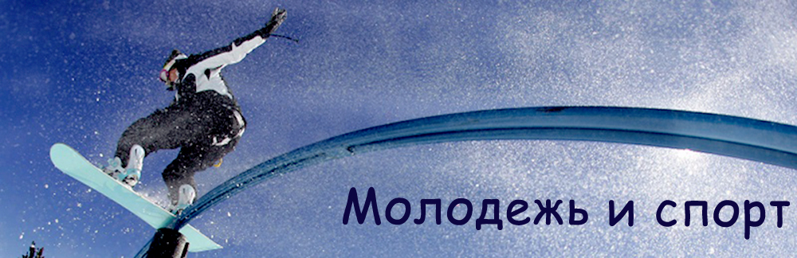
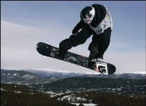
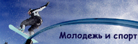

 |
||||
| Главная | Экстремальный спорт | Детский спорт | Выбор молодежи | Молодежь на Олимпийских играх |
СноубордингSnowboard (сноуборд) - относительно молодой снаряд для зимнего вида спорта и активного времяпрепровождения, однако за несколько лет сноуборд завоевал огромную популярность среди любителей активного отдыха и профессиональных спортсменов. Snowboard идеально подходит для тех, кто ценит азарт и риск, снег и горы. Сноуборд сегодня - это модно! Перепад высот в этой дисциплине сноуборда должен составлять 80-100 метров. Число ворот - двадцать-тридцать. Время, затрачиваемое на прохождения трассы, составляет, примерно, 20-25 секунд. Установленная, а также размеченная трасса должна непременно быть жёсткой, плюс, подготовлена полностью по всей ширине. Кроме того, трасса для данной дисциплины сноуборда должна полностью огораживаться. Если трассы для параллельного слалома только две, тогда левая по ходу движения спортсменов трасса размечается с использованием красных флагов, а правая - синих. |
||||
 |
Главная | Экстремальный спорт | Детский спорт | Выбор молодежи | Молодежь на Олимпийских играх |
{kind=link}